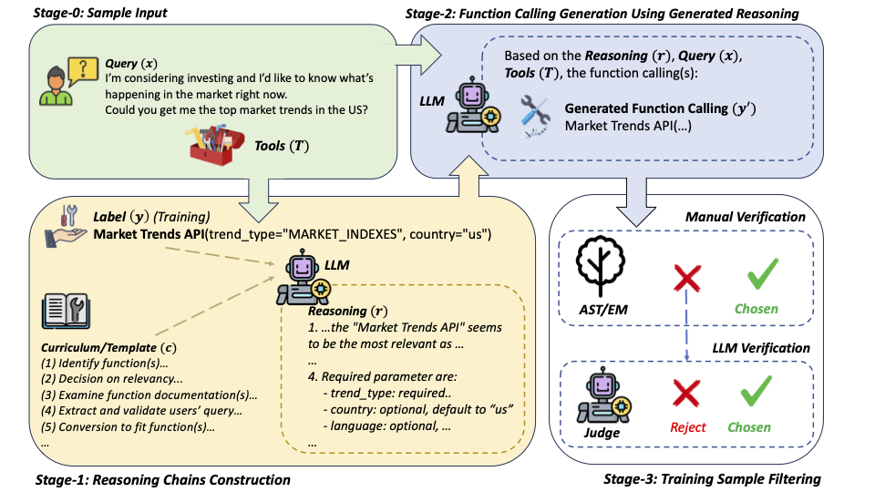
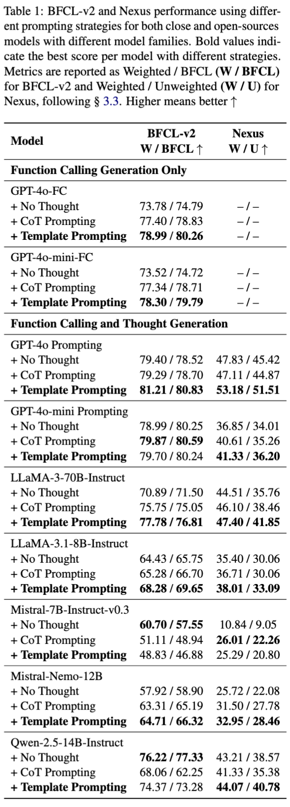
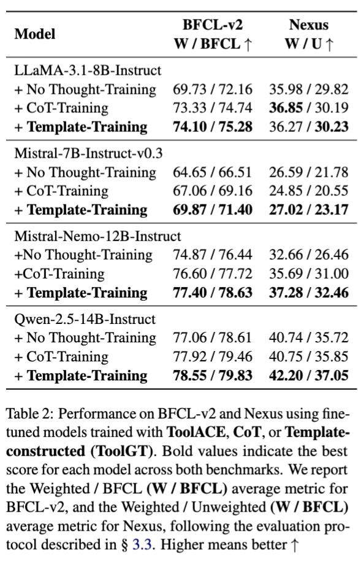
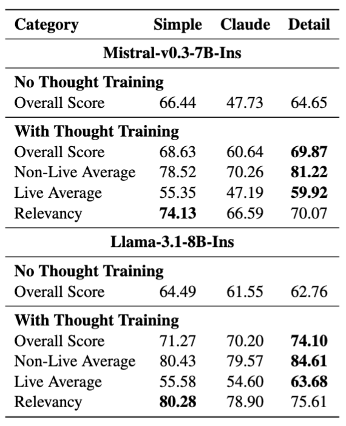
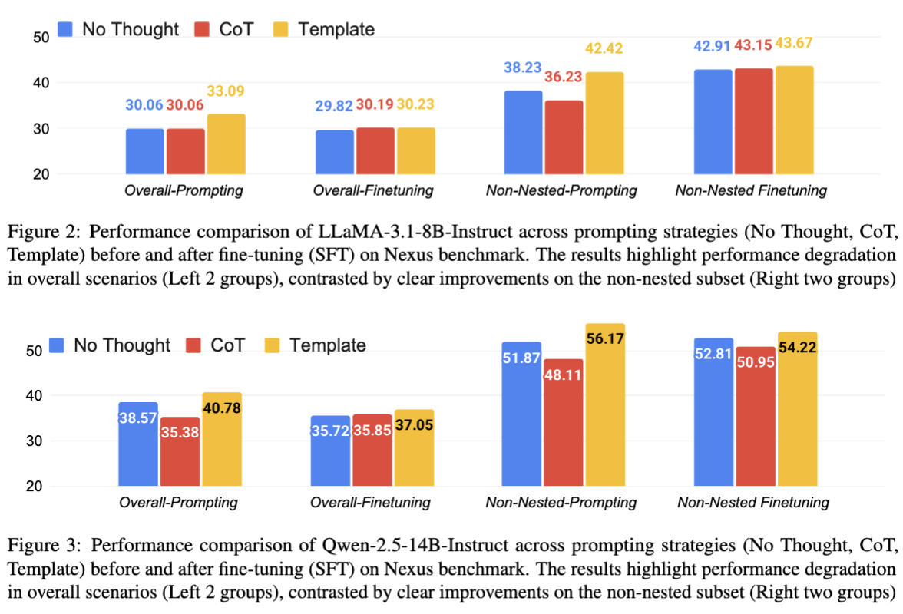

Research / EMNLP 2025
* Work done during an internship at Amazon.
Large language models (LLMs) have demonstrated strong reasoning and tool-use capabilities, yet they often fail in real-world tool-interactions due to incorrect parameterization, poor tool selection, or misinterpretation of user intent. These issues often stem from an incomplete understanding of user goals and inadequate comprehension of tool documentation. While Chain-of-Thought (CoT) prompting has proven effective for enhancing reasoning in general contexts, our analysis reveals that free-form CoT is insufficient and sometimes counterproductive for structured function-calling tasks. To address this, we introduce a curriculum-inspired framework that leverages structured reasoning templates to guide LLMs through more deliberate step-by-step instructions for generating function callings. Experimental results show that our method reduces tool-use errors, achieving 3–12% relative improvements over strong baselines across diverse model series and approaches. Moreover, our framework enhances the robustness, interpretability, and transparency of tool-using agents, advancing the development of more reliable AI assistants for real-world applications.
Large language models (LLMs) have made impressive progress in reasoning and tool use, enabling agents that can interact with external APIs to complete tasks ranging from simple lookups to complex workflows. Yet in practice, LLMs often fail to make correct function calls—choosing the wrong tool, mis-parameterizing inputs, or misinterpreting user intent. These failures, combined with a lack of transparency in how calls are generated, undermine trust and reliability in real-world applications where functional correctness is essential.
To address this challenge, we introduce a template-based reasoning framework and experiment it on both prompting and finetuning settings that structures how LLMs approach function calling. Instead of relying on free-form chain-of-thought, our approach guides models through step-by-step templates aligned with human problem-solving and tool specifications. We further create ToolGT, a synthetic dataset that encodes these reasoning patterns for training. Experiments show that this structured approach significantly reduces tool-use errors and improves interpretability compared to standard prompting methods. Together, our framework and dataset offer a path toward building more reliable, transparent, and generalizable tool-using agents.

Using template-based approach, we can observe improvements with diverse model families compared to other baselines, demonstrating the benefits of template-based, even with prompt-engineering approach.


With our finetuning dataset constructed using a template-based approach, we observe consistent improvements across diverse model families compared to other baselines and prompting methods. This highlights the importance of internalizing structured, curriculum-inspired guidance rather than relying solely on free-form CoT.
We compare three template types—Simple, Claude, and Detail—to evaluate how template complexity affects performance. Results show that the Detail template consistently achieves the highest overall accuracy. Interestingly, Simple templates occasionally outperform others on specific subtasks like Relevancy, suggesting that while detailed structures improve overall reliability, simpler templates can be advantageous for targeted tasks.
👉 These findings highlight a trade-off between specificity and simplicity, motivating future research on adaptive strategies that adjust reasoning depth based on task requirements.


We further analyze fine-tuning across LLaMA-3.1-8B and Qwen-2.5-14B on the Nexus benchmark. While fine-tuning improved performance on simpler, non-nested tasks, we observed unexpected degradation on complex, compositional tasks.
👉 This suggests that limited training coverage of complex tool-use scenarios can lead to overfitting on simpler cases, reducing generalization. Future work should expand datasets to better capture nested and compositional reasoning.
@inproceedings{dang2025improving,
author = {Hy Dang and Tianyi Liu and Zhuofeng Wu and Jingfeng Yang and Haoming Jiang and Tao Yang and Pei Chen and Zhengyang Wang and Helen Wang and Huasheng Li and Bing Yin and Meng Jiang},
title = {Improving Large Language Models Function Calling and Interpretability via Guided-Structured Templates},
booktitle={The 2025 Conference on Empirical Methods in Natural Language Processing},
year={2025},
}Project page adapted from Nerfies, under CC BY-SA 4.0.